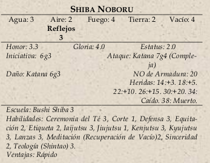

|  | Shiba Noboru (Gloria 2.6, Estatus 2.0): Guardaespaldas de Mutsuye, es un bushi modesto que considera
que cualquier de sus logros es gracias a su senséi. Protegió a las dos hermanas mayores de Mutsuye hasta que
se casaron, y trata de conseguir una recomendación de su padre para encontrar un trabajo mejor en tierras Fénix. |